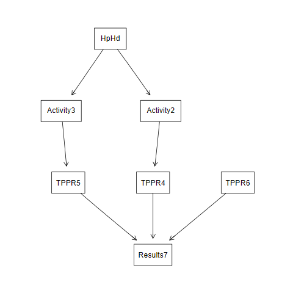
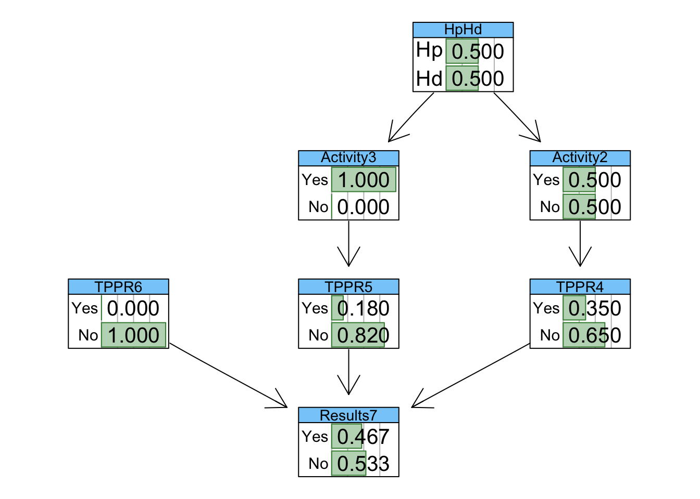
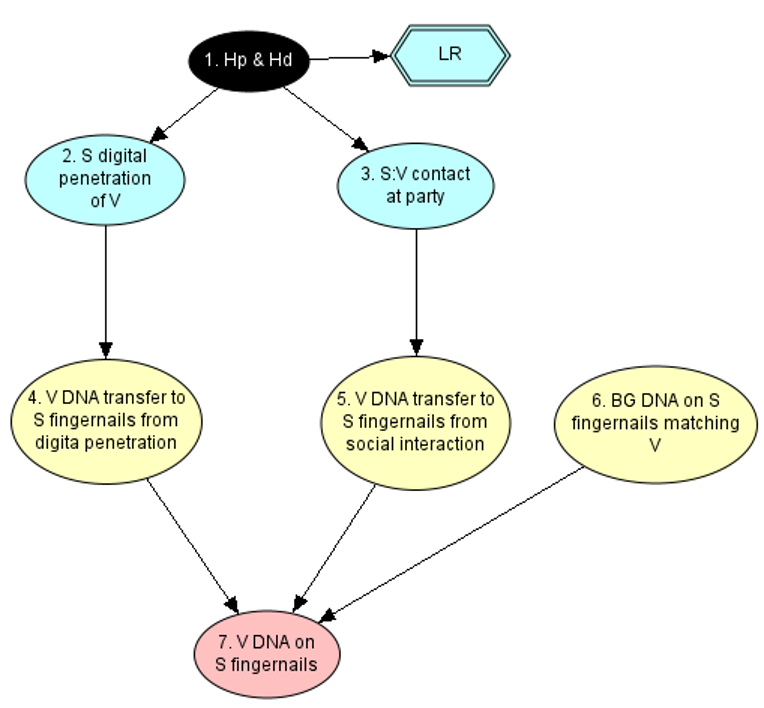
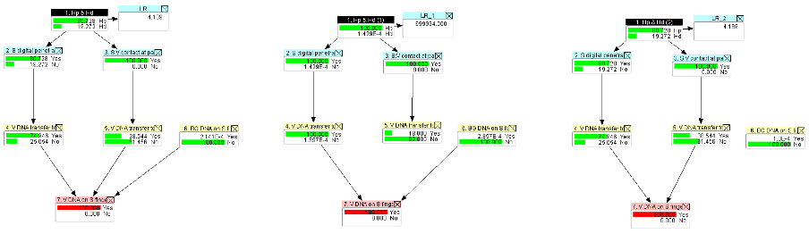
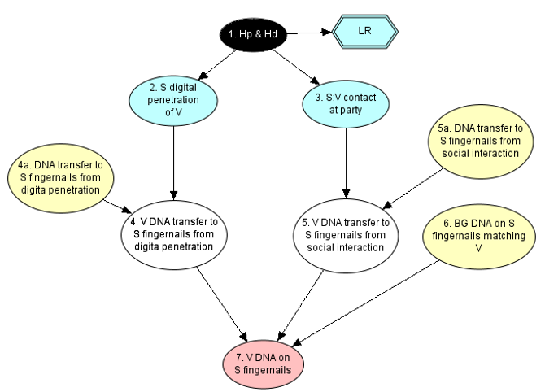
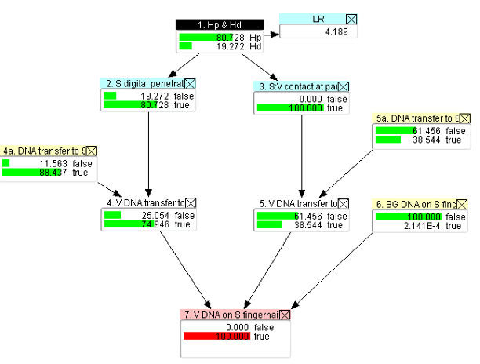

# filepath for render
originalNetwork <- read.net("simpleBNexample.net")
# file path when running manually = "BNs/Arc_Sensitivity/simpleBNexample.net"
#bn_grain <- loadHuginNet("BNs/Arc_Sensitivity/simpleBNexample.net")Assessing the Effect of Bayesian Network Arc Removal on the Calculated Likelihood Ratio
Introduction
Understanding how BNs work and what the effect of networks created by different practitioners is key to supporting robust, reproducible science. As networks become more complex there has been a move to save sub-networks of common processes to allow for reuse in other networks. These are termed OOBNs, which has opened the door to the creation of highly complex and large networks by embedding the sub-networks within the larger network. Assessment of the network to determine the effect of the values used is important to ensure the evaluation is robust and limitations are understood (Schaapveld 2019, Chen and Pollino 2012). Although there have been many advancements in causal model algorithms in the field of artificial intelligence in recent years, there is a lag in the transparency or explainability of outputs derived from these complex models that makes them less attractive to a forensic or legal context. Whether a node is included in a network is at the discretion of the practitioner and is based on the framework of circumstance and their assumptions. The effect of different practitioners can be modelled by modifying the architecture of a BN for a case by removing arcs between nodes. This changes the state probabilities of the child node so that it is no longer conditional on the parent. Determining changes in the resultant likelihood ratio value that is obtained will describe the sensitivity to networks created by different practitioners for the same case.
Methods
Importing and Visualisation of a Toy Network
A simple BN (shown in Figure 1) was created in Hugin Expert Software (Andersen 1989) and then imported into R (v4.4.1) using the BNLearn package.

The network was then visualised with probabilities showing using graphviz to ensure that it was consistent with Hugin
# origPlot <- graphviz.plot(originalNetwork,
# groups = list(
# c("HpHd", "Activity2", "Activity3"),
# c("TPPR4", "TPPR5", "TPPR6", "Results7")
# )
# )
graphviz.chart(originalNetwork,
type = "barprob",
grid = TRUE,
bar.col = "darkgreen",
strip.bg = "lightskyblue")Loading required namespace: Rgraphviz
I think there is an issue with the CPTs as the values are not showing as each option conditional on the parents. Rather the unconditional dists for the options
Set Seed for Reproducibility
set.seed(123) Initially, I attempted to identify and then iterate through the edges, removing and calculating the marginal probabilities with sampling with replacement. This would work if the nodes needed to change from conditional probabilities to unconditional probabilities for the child nodes but not when only one condition is removed.
Identifying the arcs
All of the arcs present in the toy BN are listed in the table below.
arcs <- arcs(originalNetwork)
nrow <- length(arcs[, 1])
row.names(arcs) = seq(1,nrow,1)
arcs %>% kable(row.names = TRUE)| from | to | |
|---|---|---|
| 1 | TPPR6 | Results7 |
| 2 | TPPR5 | Results7 |
| 3 | TPPR4 | Results7 |
| 4 | Activity3 | TPPR5 |
| 5 | Activity2 | TPPR4 |
| 6 | HpHd | Activity3 |
| 7 | HpHd | Activity2 |
Simulate the marginal distributions of the original network (on a new copy to not overwrite the original import)
origBN <- originalNetwork
sim_data <- rbn(origBN, n = 100000)Loop through the list of arcs, identifying parent and child, drop the arc and recreate and replace the CPT
# arcArray = list()
# arcs <- arcs(originalNetwork)
# arcBool <- if_else(in.degree(originalNetwork, arcs[,"to"]) >= 1, TRUE, FALSE)
# arcs <- cbind(arcs,arcBool)
# iterArc <- function(BN) {
# arcs <- arcs(BN)
# for(arc in arcs) {
#
# }
# }
i=1
# for (i in 1:nrow) {
parent <- arcs[[i, "from"]]
child <- arcs[[i, "to"]]
# Clarify which arc we are working on
print(glue("Arc between Parent: {parent} and Child: {child}"))Arc between Parent: TPPR6 and Child: Results7 # get the underlying structure of the bn.fitted object
bn_structure <- bn.net(origBN)
#remove the arc
newBN <- drop.arc(bn_structure, parent, child)
# make new CPT
new_data <- cptable(child,
levels=levels(sim_data[, which(names(sim_data) == child)]),
values = table(sim_data[ , which(names(sim_data) == child)])/nrow(sim_data)
)
# replace the old CPT with the new
#replace_cpt(as.grain(origBN), new_data)
# fit the new structure with some data
tempBN_fitted <- bn.fit(newBN, sim_data)Warning in check.data(data, allow.missing = TRUE): variable TPPR6 in the data
has levels that are not observed in the data.Warning in check.data(data, allow.missing = TRUE): variable Activity3 in the
data has levels that are not observed in the data.# Determine new marginal distribution with Monte Carlo Sampling
tempBN_pred <- predict(tempBN_fitted,
data = data.frame(Results7 = factor("Yes", levels = c("Yes", "No"))),
node = "HpHd",
method = "bayes-lw",
n = 10000,
prob = TRUE
) # Generate 10,000 samples if results true
# Compute empirical marginal distributions
marginal_HpHd <- attributes(tempBN_pred)$prob
cat("Empirical Marginals via Monte Carlo Sampling:\n")Empirical Marginals via Monte Carlo Sampling: cat("P(HpHd):\n")P(HpHd): print(marginal_HpHd) [,1]
Hp 0.819478
Hd 0.180522 cat("LR:")LR: print(marginal_HpHd[1]/ marginal_HpHd[2])[1] 4.53949# }Loop not working as replaceCPT needs values as a named list not a CPT (this doesnt make sense why it was made this way). I dont think Ive got the new data right yet anyway in terms of maintaining the conditionalality.
Consider computation using maths to deal with multiple parents
#bnlearn::BF(numerator, denom) computes bayes factor between two networks
# P(Child∣Remaining Parents)= ∑ P(Child∣Parents,Remaining Parents)⋅P(Parents)
new_prob <- querygrain(as.grain(origBN), nodes = child, type = "conditional")* querygrain(as.grain(origBN), nodes = parent, type = "conditional")Content from Duncan’s Thoughts Document
We want to assess the impact of arcs (or more fundamentally, dependencies I suppose) within a BN. This is useful because it tells us about the architecture we have built and whether the BN can be functionally simplified.
We have a toy BN Figure 2 where there is on obvious section of the BN that is not contributing significantly to the overall evaluation. In this example the contamination is not impactful because there is such a low probability of it being the source of defendant’s DNA when compared to the other explanations in the BN (mainly the offense and social interaction).

Node 4 just has the transfer probability for digital penetration, node 5 has the probability for DNA transfer from social contact, node 6 has the probability for contamination occurring, and the results node (node 7) is just an accumulation node, where if any of the three parents have occurred then we expect DNA to be present.
It is easy conceptually to remove some arcs, adjust the BN and show the effect. For example, we could remove the arc between node 5 and 7, and then adjust the probabilities in node 7 so they still function the same way (i.e. accumulation), but now three are only two possible soures of DNA (coming from node 4 or node 6). Similarly we could remove the arc from node 6 to 7, and again adjust the probabilities in node 7 to suit the new BN structure.
The image ?@fig-hugin-arcsmoved below shows the behaviour of the BN under these three configurations: 
It’s a bit small, but zooming in you can see that when removing the arc between node 5 and 7 (middle BN) the LR shifts dramatically from the base BN (shown on the left). However, removing the arc between node 6 and 7 (right BN) has little effect at all. We conclude from this that the node between 6 and 7 is not important in this BN (for this result at least).
So how can this idea be extrapolated up to an automated way of testing arc significance? I was thinking about this on the weekend, and it was not a trivial undertaking. At first, I thought it would be easy to just marginalise out the arc being removed, adjust the probabilities in the child node so that it was no longer dependent on that parent and then compare to the result to the base BN. A quick play around and this didn’t work (at least for me in the way I was doing it). It showed that all arcs were important. I then thought that this problem would be easier for DNA amounts as in HUGIN you just use DNA expressions and they would automatically adjust if an arc was taken out (well they would ‘automatically’ adjust, but the thinking would) e.g. node 7 would simply have an expression of ‘sum the parents’ regardless of what parents were there. So then I thought that this same thinking could be applied to any BN, it’s just that they would need to be set up in a specific way, and would need to use expressions. So…. here is what I got to. 1. All human assignments need to occur in founder nodes (the exception to this is activity nodes, in blue, which can just stay as they are). 2. All non-founder nodes then must be populated with expressions that are general across however many parent nodes are present (again activity nodes are the exception). The altered structure of the simple BN that adheres to these rules is Figure 3 below.

All the nodes (apart from the proposition node) are Boolean, and nodes 4, 5 and 7 are all expression based.
Node 4 has expression: And(node4a, node2)
Node5 has expression: And(node5a, node3)
As both nodes require both conditions to be met in order to be true. Taking out an arc is now easy, and the general expression of “and(parents)” can still be maintained, it’s just that with one parent “and(parent)” will just equal whatever the remaining “parent” is. Node 7 has expression: Or(node4, node5, node6) Because it is true if any of the parents are true. Evidence that this BN still functions is shown Figure 4 below:

So now we can iterate through the arcs in the BN, remove them, maintaining the general expression behaviour, and note the effect on the LR. I suggest we start off by doing this across each arc, just to see how it functions. There are a couple of further rules that would be applied when doing this: 1. If a node has all its parents removed through the removal of an arc (i.e. it is now a founder node) then assign its probability uniformly across states 2. If the removal of an arc leads to an LR of 0 or infinity, then it is not a valid removal (and by default the arc is important to keep).